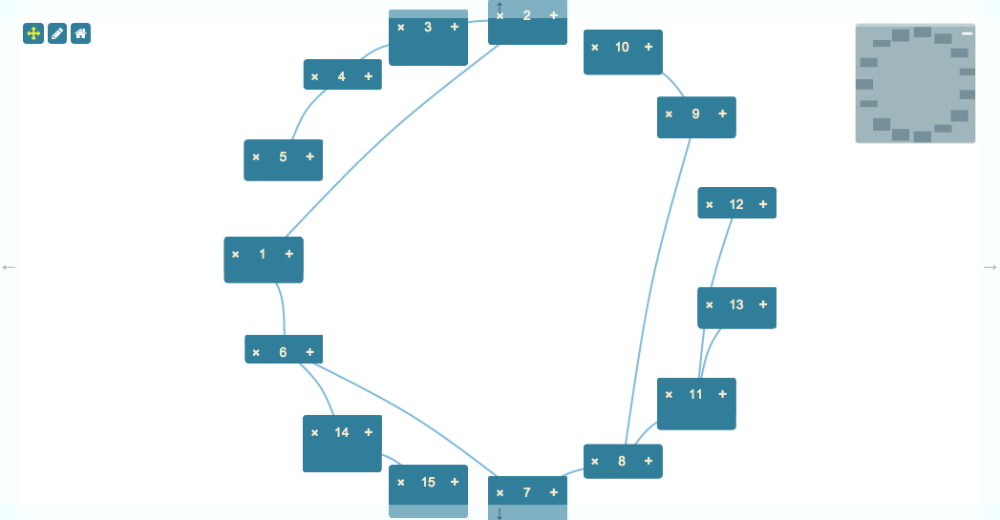

This is an example of how to use the Circular Layout to display a dataset. It is essentially a direct copy of the Hierarchical Layout demonstration, but using the Circular layout.

This demonstration uses a single template to render its nodes:
<script type="jtk" id="tmplNode">
<div style="width:${w}px;height:${h}px;">
<div class="name">
<div class="delete" title="Click to delete">
<i class="fa fa-times"></i>
</div>
<span>${name}</span>
<div class="add" title="Add child node">
<i class="fa fa-plus"></i>
</div>
</div>
</div>
</script>
Data for the demonstration is created using the randomHierarchy function from the included demo-support.js file. This function creates an arbitrary hierarchy and assigns different widths/heights to the various nodes.
The data is generated and loaded like this:
// make a random hierarchy and store how many nodes there are; we will use this when we add new nodes.
var hierarchy = jsPlumbToolkitDemoSupport.randomHierarchy(5);
var renderer = toolkit.load({type: "json", data: hierarchy}).render({
...
});
var view = {
nodes: {
"default": {
template: "tmplNode",
events: {
mouseover: function (params) {
renderer.activateState("highlight", params.el);
},
mouseout: function (params) {
renderer.deactivateState("highlight", params.el);
}
}
}
},
edges: {
"default": {
connector: [ "StateMachine", { curviness: 10 } ],
paintStyle: { lineWidth: 2, strokeStyle: "gray" },
endpoints: [ [ "Dot", { radius: 4 } ], "Blank" ]
}
},
states:{
"highlight":{
"default":{
cssClass:"hover-node",
paintStyle: { lineWidth: 4, strokeStyle: "orange"},
endpointStyle:{ fillStyle: "#FF6600" }
}
}
}
}
This View has a UI State called "highlight" defined. In the events for the default node, the state is activated and deactivated. This causes the current Node and all Edges connected to it to have the state applied to them.
This is the call that sets up the UI:
render({
container: canvasElement,
elementsDraggable: false,
zoomToFit: true,
view: view,
layout: {
type: "Circular",
padding: 15
},
events: {
canvasClick: function (e) {
toolkit.clearSelection();
},
modeChanged: function (mode) {
jsPlumb.removeClass(jsPlumb.getSelector("[mode]"), "selected-mode");
jsPlumb.addClass(jsPlumb.getSelector("[mode='" + mode + "']"), "selected-mode");
}
},
jsPlumb: {
Anchor: "Center",
EndpointStyle: { fillStyle: "gray" },
EndpointHoverStyle: { fillStyle: "#FF6600" },
HoverPaintStyle: {lineWidth: 4, strokeStyle: "orange"}
},
miniview: {
container: miniviewElement
},
lassoFilter: ".controls, .controls *, .miniview, .miniview *"
});
Here's an explanation of what the various parameters mean:
This identifies the element into which you wish the Toolkit to render.
These are the Node, Port and Edge definitions for this renderer.
Parameters for the layout.
{
type:"Circular",
parameters:{
padding:15
}
}
Here we specify a Circular layout with padding of 15 pixels between nodes.
{
container:miniviewElement
}
The miniview options provide the the element to convert into a miniview. You can also provide an element ID here.
This selector specifies elements on which a mousedown should not cause the selection lasso to begin. In this demonstration we exclude the buttons in the top left and the miniview.
We listen for two events:
canvasClick - a click somewhere on the widget's whitespace. Then we clear the Toolkit's current selection.
modeChanged - Surface's mode has changed (either "select" or "pan"). We update the state of the buttons.
Recall that the Surface widget is backed by an instance of jsPlumb. This parameter sets the Defaults for that object.
Lasso selection is enabled by default on the Surface widget. To activate the lasso, click the pencil icon in the toolbar:

The code that listens to clicks on this icon is as follows:
// pan mode/select mode
jsPlumb.on(".controls", "tap", "[mode]", function () {
renderer.setMode(this.getAttribute("mode"));
});
The tap listener extracts the desired mode from the button that was clicked and sets it on the renderer. This causes
a modeChanged event to be fired, which is picked up by the modeChanged event listener in the View.
Note that here we could have used a click listener, but tap works better for mobile devices.
The lasso works in two ways: when you drag from left to right, any node that intersects your lasso will be selected. When you drag from right to left, only nodes that are enclosed by your lasso will be selected.
The Surface widget automatically exits select mode once the user has selected something. In this application we also listen to clicks on the whitespace in the widget and switch back to pan mode when we detect one. This is the events argument to the render call:
events: {
canvasClick: function (e) {
toolkit.clearSelection();
}
}
clearSelection clears the current selection and switches back to Pan mode.
Each node in this demonstration has two buttons:

Clicking on the + button causes a new node to be added as a child of the current Node. Here's the code that sets up the listener and adds the child:
jsPlumb.on("#canvas", "tap", ".add *", function (e) {
// this helper method can retrieve the associated
// toolkit information from any DOM element.
var info = toolkit.getObjectInfo(this);
// get data for a random node.
var n = jsPlumbToolkitDemoSupport.randomNode();
// add the node to the toolkit
var newNode = toolkit.addNode(n);
// and add an edge for it from the current node.
toolkit.addEdge({source: info.obj, target: newNode});
});
Clicking the delete button in this demonstration deletes not just the current node, but also all of its descendants. This is done by creating a Selection and then instructing the Toolkit to remove everything in that Selection:
jsPlumb.on("#canvas, "tap", ".delete *", function (e) {
var info = toolkit.getObjectInfo(this);
var selection = toolkit.selectDescendants(info.obj, true);
toolkit.remove(selection);
});